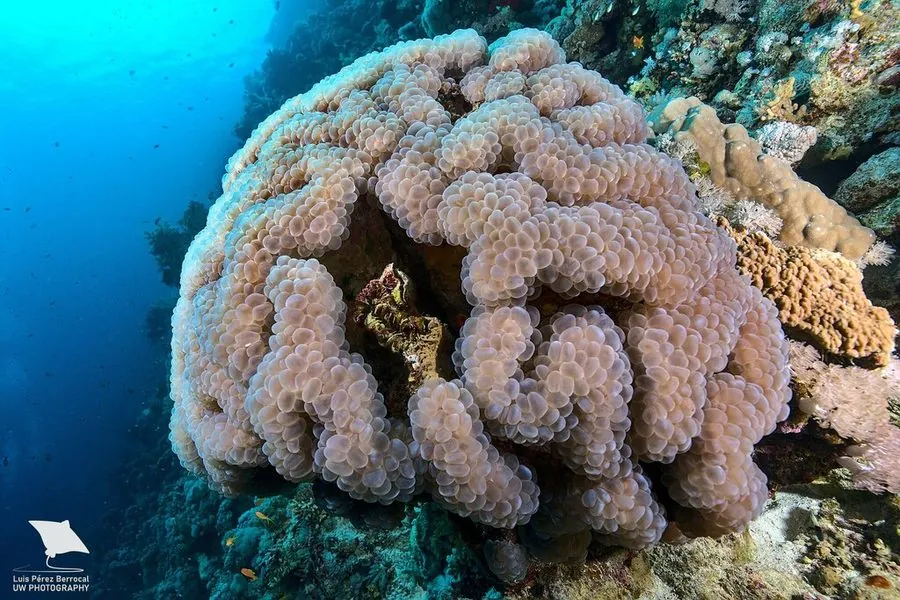

其他无脊椎动物 · 动物界
气泡珊瑚 Plerogyra sinuosa

印度洋—太平洋珊瑚礁的造礁珊瑚，白天膨起一串串气泡状水螅体，夜间伸出触手捕食，触手有较强刺细胞。
- 分类
- 门刺胞动物门纲珊瑚纲目石珊瑚目科真叶珊瑚科属气泡珊瑚属
- 栖息环境
- 热带珊瑚礁的礁坡、潟湖和洞穴口，水深 1–20 米
- 地理分布
- 印度洋—太平洋热带海域，从红海到印度尼西亚和澳大利亚
- 保护级别
- IUCN 暂无评估；CITES 附录Ⅱ
物种志
气泡珊瑚的群体由许多肉质水螅体组成，白天水螅体膨胀成一颗颗光滑的气泡，直径 1–2 厘米，密集成串，颜色从乳白、浅绿到淡蓝色；气泡表面柔软，内部充满海水，看起来像一串葡萄。
它分布于印度洋—太平洋的珊瑚礁，常见于礁坡、潟湖和洞穴口，水深 1–20 米，夜间气泡收缩，伸出细长的触手捕食浮游生物。气泡状水螅体增大了受光面积，有利于体内虫黄藻进行光合作用。它的触手带有刺细胞，接触皮肤会引起刺痛和红肿，潜水或搬运时应戴手套。气泡珊瑚因外形奇特被水族贸易大量采集，加上白化威胁，野生种群需要关注，石珊瑚整体列入 CITES 附录Ⅱ。
形态与习性
- 形态水螅体膨大成 1–2 cm 的气泡，密集成串
- 共生与虫黄藻共生，气泡增大受光面积
- 捕食夜间伸出触手捕食浮游生物
- 刺伤风险触手刺细胞可致皮肤刺痛红肿，接触需戴手套
- 水深常见于 1–20 m 的礁坡和潟湖
- 保护CITES 附录Ⅱ
趣味知识
- 气泡珊瑚白天鼓起的“气泡”其实是它的肉质水螅体。
- 到了夜间气泡会收缩，它才伸出细长触手捕食。
- 它的触手刺细胞较强，徒手接触会引起明显刺痛。